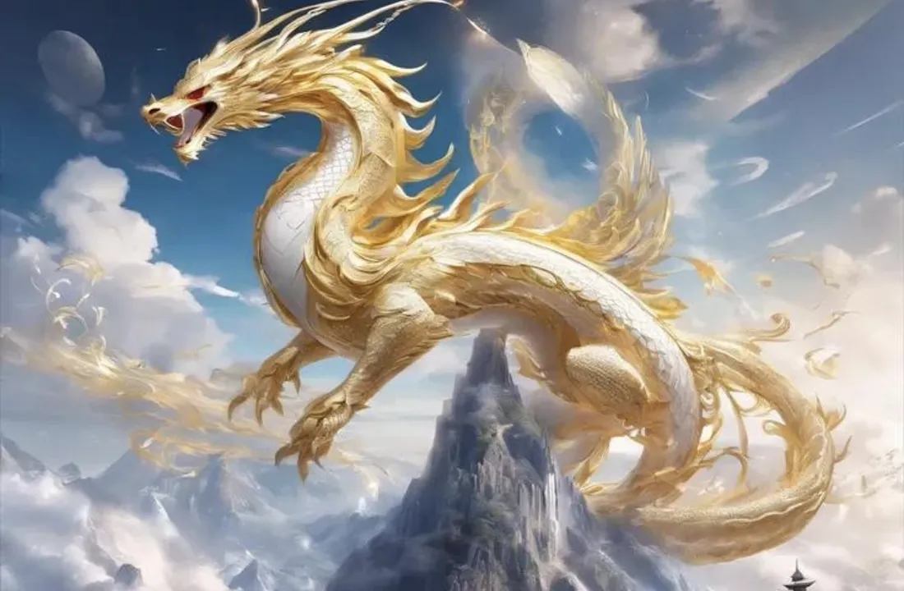

Zodiac Stories & Legends
The Dragon's Legend: Power, Wisdom, and Good Fortune
It can fly, it controls the rain, and emperors wore its image. So why did the Dragon finish only fifth in the Great Race?

The only mythical animal in the zodiac
Eleven of the twelve zodiac animals are real creatures you could meet on a farm or in a forest. The Dragon is the exception. In Chinese tradition it is a majestic being that lives in rivers, lakes and oceans and roams the skies, usually shown as a long, scaly, snake-like creature with horns and four clawed legs.
Why the Dragon finished fifth
In the folk tale of the Great Race, the Dragon was the one animal that should have won easily: it could simply fly over the river. Yet it arrived fifth, behind the Rat, Ox, Tiger and Rabbit. When the Jade Emperor asked why, the Dragon explained that it had stopped along the way to bring rain to people who needed it.
Then, as it neared the finish, it saw the little Rabbit clinging to a log in the river and gave one gentle breath to blow the log to the shore. The Emperor was impressed by this kindness and gave the Dragon its honored place. The lesson is clear: the most powerful animal in the race used its power for others, and lost nothing that mattered.
A rain-bringer, not a monster
The story fits the dragon's oldest role. Britannica describes the Chinese dragon as originally a rain divinity, associated with heavenly kindness and fertility, in contrast to the dangerous dragons of European legend. In farming communities that depended on rain, a creature that controlled water was something to honor, not fear.
Over time, dragon gods known as the Dragon Kings were said to rule the four seas, bring rain and protect sailors.
The emblem of emperors
Because the dragon stood for power that brings good to the land, Chinese emperors adopted its image as a sacred symbol of imperial authority. Dragons decorated palace roofs, robes and thrones. That link with leadership is part of why the Dragon year is still one of the most celebrated in the cycle.
What the legend says about the Dragon sign
Our Year of the Dragon guide describes the sign as confident, charismatic and ambitious, often drawn to leadership. The race adds a gentler side: real strength includes the choice to slow down and help. Traditional readings also warn that Dragons can seem proud or impatient with limits, which makes the story of a Dragon that waits for others even more meaningful.
The Dragon also has a close relative in the zodiac. The Snake is sometimes called the "little dragon", and you can read its story in The Snake's Place in the Great Race.
The Dragon in Cambodia
In the Khmer cycle the Dragon year is called Rong. Like the other Khmer animal years, it begins at Khmer New Year in April; see Khmer animal years.
Are you a Dragon? Find your zodiac animal and element or see who you match with in the compatibility guide.
Frequently asked questions
Why did the Dragon come fifth if it could fly?
In the folk tale, it stopped to bring rain to people in need and to help the Rabbit reach the shore.
Is the Chinese dragon good or evil?
Traditionally it is a kindly, rain-bringing figure associated with good fortune, unlike the dangerous dragons of European stories.
Why is the dragon linked with emperors?
Chinese emperors adopted the dragon as a sacred emblem of imperial power.
Sources and further reading
- Britannica: long (Chinese dragon) — the dragon as a rain divinity, the Dragon Kings, and the dragon as an imperial emblem.
- Wikipedia: Chinese zodiac — the Great Race folk tale and its variants, and the link between the animals and the Earthly Branches.
- University of Sydney: Lunar New Year 2025: what does Year of the Snake mean? — Professor Xiaohuan Zhao on the snake as a 'little dragon' and a symbol of wisdom and longevity.
The Great Race and the other tales here are folk tales, told in many versions; they are not historical events. Personality traits are traditional zodiac beliefs, shared for culture and entertainment.
Explore more: The Great Zodiac Race · Year of the Dragon guide · The Rabbit's Clever Crossing · Compatibility guide · All Zodiac Stories & Legends
← Back to Zodiac Stories & Legends